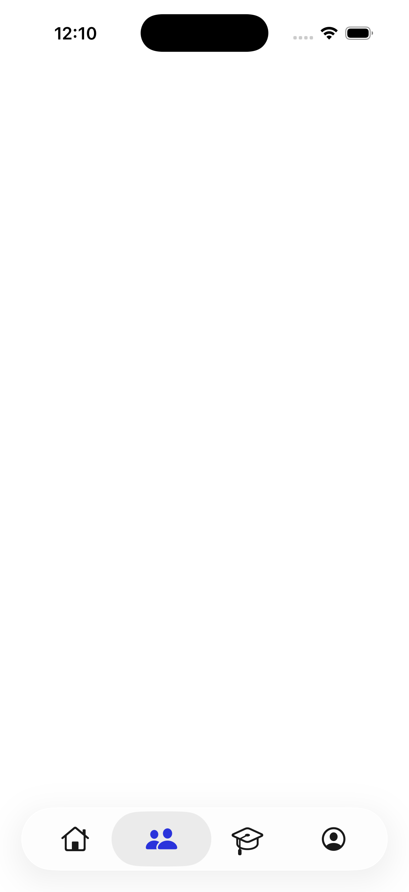
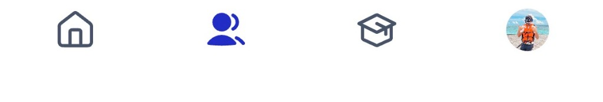

Sample Code (iOS 26+)
Use this guide as the implementation reference to ship native iOS 26+ liquid glass tabs in your Flutter app while preserving fallback tabs for iOS below 26 and Android.
Clean state-only view for sharing: iOS 26+ native liquid glass, iOS below 26 fallback, and Android Flutter fallback. All examples use the same tab set and show a non-feed tab selected.


Configure iOS 26+ subtypes here. Code below updates on selection.
This state remains separate and stable. It keeps default Flutter tabs for older iOS and Android.
Download the current generated code blocks as files. iOS 26+ downloads reflect selected subtype options (labels, haptics, selected color).
Some Flutter projects start with Objective-C files (`AppDelegate.m/.h`) instead of Swift. You can either implement equivalent native tab setup in Objective-C, or migrate Runner host code to Swift and then use the Swift pattern shown above.
Use this section when starting from a fresh app. These are starter templates to speed up setup; replace tab screens/routes with your app pages.
const String iosHomeRoute = '/ios-tab/home';
const String iosCommunitiesRoute = '/ios-tab/communities';
const String iosCoursesRoute = '/ios-tab/courses';
const String iosAccountRoute = '/ios-tab/account';
class AppColors {
static const tabSelected = Color(0xFF343DE5);
}
MaterialApp(
initialRoute: PlatformDispatcher.instance.defaultRouteName,
onGenerateRoute: (settings) {
switch (settings.name) {
case iosHomeRoute:
return MaterialPageRoute(builder: (_) => const Scaffold(body: SafeArea(bottom: false, child: HomeScreen())));
case iosCommunitiesRoute:
return MaterialPageRoute(builder: (_) => const Scaffold(body: SafeArea(bottom: false, child: CommunitiesScreen())));
case iosCoursesRoute:
return MaterialPageRoute(builder: (_) => const Scaffold(body: SafeArea(bottom: false, child: CoursesScreen())));
case iosAccountRoute:
return MaterialPageRoute(builder: (_) => const Scaffold(body: SafeArea(bottom: false, child: AccountScreen())));
default:
return MaterialPageRoute(builder: (_) => const AdaptiveHomeShell());
}
},
);
// Keep this fallback for iOS < 26 and Android
// (CupertinoTabScaffold + NavigationBar)import Flutter
import UIKit
private struct NativeTabSpec {
let title: String
let imageName: String
let selectedImageName: String
let route: String
}
@main
@objc class AppDelegate: FlutterAppDelegate, UITabBarControllerDelegate {
private let showLabelsOnIOS26 = false
private let enableHaptics = true
private let selectedColor = UIColor(red: 0x34/255.0, green: 0x3D/255.0, blue: 0xE5/255.0, alpha: 1.0)
private let feedback = UISelectionFeedbackGenerator()
private var lastIndex = 0
private let tabs: [NativeTabSpec] = [
.init(title: "Home", imageName: "house", selectedImageName: "house.fill", route: "/ios-tab/home"),
.init(title: "Groups", imageName: "person.2", selectedImageName: "person.2.fill", route: "/ios-tab/communities"),
.init(title: "Courses", imageName: "graduationcap", selectedImageName: "graduationcap.fill", route: "/ios-tab/courses"),
.init(title: "Account", imageName: "person.crop.circle", selectedImageName: "person.crop.circle.fill", route: "/ios-tab/account"),
]
override func application(
_ application: UIApplication,
didFinishLaunchingWithOptions launchOptions: [UIApplication.LaunchOptionsKey: Any]?
) -> Bool {
GeneratedPluginRegistrant.register(with: self)
let ok = super.application(application, didFinishLaunchingWithOptions: launchOptions)
if #available(iOS 26.0, *) {
let tc = UITabBarController()
tc.tabBar.tintColor = selectedColor
tc.tabBar.itemPositioning = .fill
// Build tab VCs with Flutter routes here.
window?.rootViewController = tc
window?.makeKeyAndVisible()
}
return ok
}
}1) Add 4 native routes in main.dart.
2) Keep fallback shell for iOS < 26 and Android.
3) Add iOS 26 availability gate in AppDelegate.swift.
4) Wire 4 native tabs to the same routes.
5) Verify:
- iOS 26+: native liquid glass
- iOS < 26: default iOS tabs
- Android: Flutter tabs
6) Optional subtype toggles:
- labels on/off
- haptic on/off
- selected color token